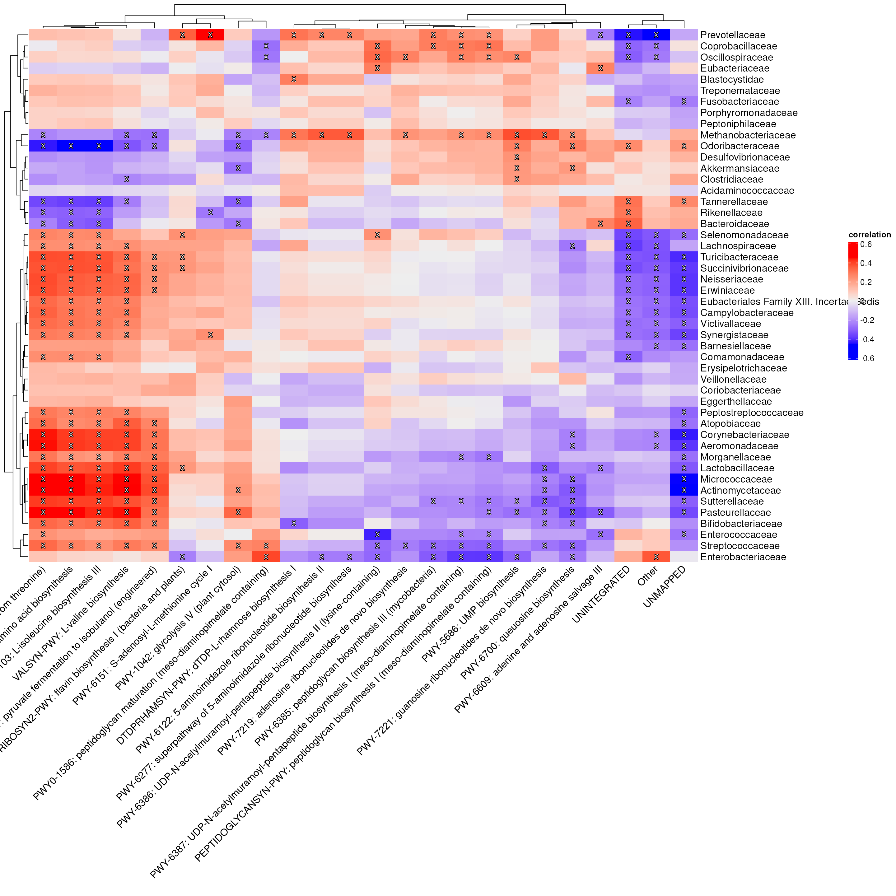

Orchestrating Microbiome Analysis with Bioconductor (ECCB)
Source:vignettes/eccb_workflow.Rmd
eccb_workflow.RmdAuthors: Tuomas Borman, Pande Erawijantari, Giulio Benedetti,
Stefanie Peschel, Leo Lahti.
Last modified: 12 September,
2024.

Overview
Description
This tutorial introduces the latest advances in Bioconductor tools and data structures supporting microbiome analysis. We will show how this can enhance interoperability across omics and walk through a typical microbiome data science workflow. You will learn from active developers how to access open microbiome data resources, utilize optimized data structures, assess community diversity and composition, integrate taxonomic and functional hierarchies, and visualize microbiome data. We will follow the online book “Orchestrating Microbiome Analysis with Bioconductor” and Bioconductor SummarizedExperiment framework, supporting optimized analysis and integration of hierarchical, multi-domain microbiome data. Participants are encouraged to install the latest versions of R and Bioconductor.
Pre-requisites
- Basic knowledge of R coding
- Understanding of microbiome research
If your time allows, we recommend to spend some time to explore beforehand Orchestrating Microbiome Analysis (OMA) online book.
Participation
We have instructor-led demonstrations where participants are expected to follow along. Questions are encouraged at any time during the workshop.
It is preferred to use your own laptop. You can find help for installation from here. There are also available pre-installed virtual machines by Galaxy/Bioconductor. (Under “EUROBIOC2024” tab, session called “Package Demo: mia”)
R / Bioconductor packages used
In this workshop, we will focus on the mia package, which is designed for microbiome data science. The mia package provides essential tools for analyzing microbiome data using the SummarizedExperiment framework.
Additionally, we will cover NetCoMi and iSEEtree in network and interactive data exploration session, respectively.
Time outline
| Activity | Time |
|---|---|
| Bioconductor resources for microbiome data science | 30m |
| Analysis of community diversity and composition | 30m |
| Microbiome data integration | 30m |
| Coffee break | 30m |
| Microbial network analysis | 30m |
| Interactive microbiome data exploration with iSEEtree | 30m |
| Recap and Q&A | 30m |
Workshop goals and objectives
Learning goals
Methods for microbiome analysis: Learn to harness SummarizedExperiment ecosystem in your project.
Data structure: Understand how to utilize the TreeSummarizedExperiment class for effective microbiome data analysis.
Access resources: Get familiar with additional tools and resources, including the OMA online book.
Learning objectives
Analyze and apply methods: Apply the framework to process and analyze microbiome data.
Visualize data: Generate and interpret common graphs for microbiome data
Explore documentation: Use the OMA to explore additional tools and methods.
Introduction
In this workflow, we demonstrate how to analyze data from publicly available microbiome resources using Bioconductor methods. We will cover essential data wrangling steps, explore alpha and beta diversity metrics, and introduce the fundamentals of data integration and microbial network analysis. Additionally, we will explore how to utilize the tools through a graphical interface.
Bioconductor resources for microbiome data science
Load packages
First, we load the required packages into the session. The following script ensures that any packages not already installed are automatically installed.
# List of packages that we need
packages <- c(
"ComplexHeatmap",
"curatedMetagenomicData",
"iSEEtree",
"mia",
"miaViz",
"scater",
"shadowtext"
)
# Get packages that are already installed
packages_already_installed <- packages[ packages %in% installed.packages() ]
# Get packages that need to be installed
packages_need_to_install <- setdiff( packages, packages_already_installed )
# Loads BiocManager into the session. Install it if it is not already installed.
if( !require("BiocManager") ){
install.packages("BiocManager")
library("BiocManager")
}
# If there are packages that need to be installed, installs them with BiocManager
# Updates old packages.
if( length(packages_need_to_install) > 0 ) {
install(version = "devel")
install(packages_need_to_install, ask = FALSE, update = FALSE)
}
# Load all packages into session. Stop if there are packages that were not
# successfully loaded
pkgs_not_loaded <- !sapply(packages, require, character.only = TRUE)
pkgs_not_loaded <- names(pkgs_not_loaded)[ pkgs_not_loaded ]
if( length(pkgs_not_loaded) > 0 ){
stop(
"Error in loading the following packages into the session: '",
paste0(pkgs_not_loaded, collapse = "', '"), "'")
}If you encountered an error, install packages manually.
Importing data
There are several openly available datasets listed in OMA. In this workflow, we will retrieve data from the curatedMetagenomicData resource. We’ll focus on a dataset that includes both colorectal cancer (CRC) patients and control subjects. Our goal is to investigate whether CRC is associated with alterations in the gut microbiota.
Let’s fetch the data from the database.
# Study from which we want to fetch data
study <- "GuptaA_2019"
# Experiments that we want to fetch
experiments <- c("pathway_abundance", "relative_abundance") |>
paste0(collapse = "|")
search_pattern <- paste0(study, ".(", experiments, ")")
# Fetch data
data_list <- curatedMetagenomicData(
search_pattern, dryrun = FALSE, counts = TRUE, rownames = "short")
#> $`2021-03-31.GuptaA_2019.relative_abundance`
#> dropping rows without rowTree matches:
#> k__Bacteria|p__Actinobacteria|c__Coriobacteriia|o__Coriobacteriales|f__Coriobacteriaceae|g__Collinsella|s__Collinsella_stercoris
#> k__Bacteria|p__Actinobacteria|c__Coriobacteriia|o__Coriobacteriales|f__Coriobacteriaceae|g__Enorma|s__[Collinsella]_massiliensis
#> k__Bacteria|p__Firmicutes|c__Bacilli|o__Lactobacillales|f__Carnobacteriaceae|g__Granulicatella|s__Granulicatella_elegans
#> k__Bacteria|p__Firmicutes|c__Clostridia|o__Clostridiales|f__Ruminococcaceae|g__Ruminococcus|s__Ruminococcus_champanellensis
#> k__Bacteria|p__Proteobacteria|c__Betaproteobacteria|o__Burkholderiales|f__Sutterellaceae|g__Sutterella|s__Sutterella_parvirubra
# Add new names
names(data_list) <- c("pathway", "taxonomy")
# The assay name for taxonomy profile is incorrect since we have counts, not
# relative abundances
tse <- data_list[["taxonomy"]]
assayNames(tse) <- "counts"
data_list[["taxonomy"]] <- tse
# For pathway data, extract pathway information from rownames and add them to
# rowData
tse <- data_list[["pathway"]]
rowData(tse)[["full_name"]] <- rownames(tse)
rowData(tse)[["pathway"]] <- sub("\\|.*", "", rowData(tse)[["full_name"]])
data_list[["pathway"]] <- tse
# Get taxonomy object
tse <- data_list[["taxonomy"]]
tse
#> class: TreeSummarizedExperiment
#> dim: 304 60
#> metadata(1): agglomerated_by_rank
#> assays(1): counts
#> rownames(304): [Bacteroides] pectinophilus [Clostridium] hylemonae ...
#> Victivallis vadensis Weissella confusa
#> rowData names(7): superkingdom phylum ... genus species
#> colnames(60): GupDM_A_11 GupDM_A_15 ... GupDM_JO GupDM_JP
#> colData names(27): study_name subject_id ... disease_stage
#> disease_location
#> reducedDimNames(0):
#> mainExpName: NULL
#> altExpNames(0):
#> rowLinks: a LinkDataFrame (304 rows)
#> rowTree: 1 phylo tree(s) (10430 leaves)
#> colLinks: NULL
#> colTree: NULLThe output is a TreeSummarizedExperiment
(TreeSE) object. For details on how to handle and access
the data, refer to data
containers chapter in OMA.
Preprocess
A common step in microbiome workflows is agglomeration, where we summarize data at specific taxonomy ranks. Additionally, preprocessing involves transforming the data to address the unique characteristics of microbiome profiling data, for instance. Details on agglomeration and transformation are covered in agglomeration and transformation chapters in OMA, respectively.
# Agglomerate data
tse_family <- agglomerateByRank(tse, rank = "family")
#> Warning: The following values are already present in `metadata` and will be
#> overwritten: 'agglomerated_by_rank'. Consider using the 'name' argument to
#> specify alternative names.
# Transform the main TreeSE
tse <- transformAssay(tse, method = "relabundance")
tse <- transformAssay(tse, method = "clr", pseudocount = 1)
# Transform agglomerated data
tse_family <- transformAssay(tse_family, method = "relabundance")
tse_family <- transformAssay(tse_family, method = "clr", pseudocount = 1)Analysis of community diversity and composition
Now that the data has been pre-processed, we could start to analyze the overview of the microbiome profile. For the dataset above, we can continue to perform analysis, for example to answer these questions:
- How does the microbial community differ between the CRC (n=30) vs healthy group (n=30)?
2.How does the beta diversity compare between the CRC (n=30) vs healthy group (n=30)?
- What species shows significantly different relative abundance between 2 groups?
For those, let’s do the analysis in the species level.
# Agglomerate data
tse_spec <- agglomerateByRank(tse, rank = "species", name="species")
#> Warning: The following values are already present in `metadata` and will be
#> overwritten: 'agglomerated_by_rank'. Consider using the 'name' argument to
#> specify alternative names.
# Transform agglomerated data
tse_spec <- transformAssay(tse_spec, method = "relabundance")
tse_spec <- transformAssay(tse_spec, method = "clr", pseudocount = 1)Let’s start with analyzing the differences on microbial community diversity between CRC and healthy control group. Community diversity is a central concept in microbiome research, and in the human microbiome study it has been shown that the microbial diversity associated with the host health status. Several diversity indices are available in the ecological literature. You can explore further in the OMA book about what analysis in-term of community diversity can be analyzed using mia package.
For simplicity, let’s calculate the microbial richness and alpha diversity using the Shannon index (other calculation using different index also available, and you can explore further)
tse_spec <- estimateRichness(tse_spec,
assay.type = "counts",
index = "observed",
name="observed")
#> Warning in estimateRichness(tse_spec, assay.type = "counts", index =
#> "observed", : 'estimateRichness' is deprecated. Use 'addAlpha' instead.
tse_spec <- estimateDiversity(tse_spec,
assay.type = "counts",
index = "shannon",
name = "shannon")
#> Warning in estimateDiversity(tse_spec, assay.type = "counts", index =
#> "shannon", : 'estimateDiversity' is deprecated. Use 'addAlpha' instead.
#to see the shannon calculation
head(tse_spec$shannon)
#> [1] 2.755092 1.044521 3.305171 2.744079 2.570301 2.937390To see the differences between healthy and CRC group, let’s visualize the shannon diversity using violin plot (you can also experiment with boxplot). The information about diseases state is available from the colData of tse object, in the “diseases” column.
library(ggsignif)
library(ggplot2)
library(patchwork)
df <- as.data.frame(colData(tse_spec))
# Changes old levels with new levels
df$disease <- factor(df[["disease"]])
# For significance testing, all different combinations are determined
comb <- split(t(combn(levels(df$disease ), 2)),
seq(nrow(t(combn(levels(df$disease ), 2)))))
# Observed richness plot
observed_plot <- ggplot(df, aes(x = disease, y = observed)) +
geom_boxplot(outlier.shape = NA) +
geom_jitter(width = 0.2) +
geom_signif(comparisons = comb, map_signif_level = FALSE, correction = "fdr") +
theme_minimal() +
theme(text = element_text(size = 10)) +
labs(title = "Observed Richness", y = "Observed Species")
#> Warning in geom_signif(comparisons = comb, map_signif_level = FALSE, correction
#> = "fdr"): Ignoring unknown parameters: `correction`
# Shannon diversity plot
shannon_plot <- ggplot(df, aes(x = disease, y = shannon)) +
geom_boxplot(outlier.shape = NA) +
geom_jitter(width = 0.2) +
geom_signif(comparisons = comb, map_signif_level = FALSE, correction = "fdr") +
theme_minimal() +
theme(text = element_text(size = 10)) +
labs(title = "Shannon Diversity", y = "Shannon Index")
#> Warning in geom_signif(comparisons = comb, map_signif_level = FALSE, correction
#> = "fdr"): Ignoring unknown parameters: `correction`
# Combine the two plots into a grid
combined_plot <- observed_plot + shannon_plot
# Display the combined plot
print(combined_plot)
#> Warning in wilcox.test.default(c(55, 29, 148, 68, 63, 51, 37, 44, 45, 61, :
#> cannot compute exact p-value with ties
Thinking box > Can you also do the diversity analysis using different indexes? > What can you inffer by this observation?
Microbiome data integration
As demonstrated, CRC patients appear to have altered microbiota. However, this observation only indicates an association and does not imply causality or reveal underlying mechanisms. To explore complex mechanisms, we often need more comprehensive data. Efficiently handling data from multiple experiments requires integrating these datasets into a unified data container. Bioconductor offers two approaches for this:
- Using the
altExpslot within theTreeSEobject, which is a straightforward method. - Employing
MultiAssayExperiment, a more general and flexible approach, though it comes with a more complex data structure compared toTreeSE.
For detailed information on both approaches, refer to OMA.
In this tutorial, we will focus on the simpler method using the
altExp slot.
The data fetched at the beginning of this workflow is a
list containing multiple experiments, each represented as a
unique (Tree)SE object. Managing this list and the
connections between samples can be error-prone and cumbersome. To
simplify this, we can use the altExp slot to handle the
bookkeeping. Let’s start by checking which experiments are
available:
names(data_list)
#> [1] "pathway" "taxonomy"As we see, we have metabolic pathway predictions in addition to
taxonomic profiling. We can add the entire list of experiments to the
altExp slot.
altExps(tse) <- data_list
tse
#> class: TreeSummarizedExperiment
#> dim: 304 60
#> metadata(1): agglomerated_by_rank
#> assays(3): counts relabundance clr
#> rownames(304): [Bacteroides] pectinophilus [Clostridium] hylemonae ...
#> Victivallis vadensis Weissella confusa
#> rowData names(7): superkingdom phylum ... genus species
#> colnames(60): GupDM_A_11 GupDM_A_15 ... GupDM_JO GupDM_JP
#> colData names(27): study_name subject_id ... disease_stage
#> disease_location
#> reducedDimNames(0):
#> mainExpName: NULL
#> altExpNames(2): pathway taxonomy
#> rowLinks: a LinkDataFrame (304 rows)
#> rowTree: 1 phylo tree(s) (10430 leaves)
#> colLinks: NULL
#> colTree: NULLWith the altExp slot now populated, you can access the
data using the altExp() function and specify which
experiment you want to retrieve.
altExp(tse, "pathway")
#> class: SummarizedExperiment
#> dim: 12535 60
#> metadata(0):
#> assays(1): pathway_abundance
#> rownames(12535): UNMAPPED UNINTEGRATED ... PWY-7197: pyrimidine
#> deoxyribonucleotide
#> phosphorylation|g__Desulfovibrio.s__Desulfovibrio_piger PWY-6703:
#> preQ0 biosynthesis|g__Butyricimonas.s__Butyricimonas_virosa
#> rowData names(2): full_name pathway
#> colnames(60): GupDM_A_11 GupDM_A_15 ... GupDM_JO GupDM_JP
#> colData names(27): study_name subject_id ... disease_stage
#> disease_locationAs mentioned earlier, the advantage of the altExp slot
is that it handles sample linkages for us. For example, if we select a
subset of data, the object automatically subsets all associated
experiments accordingly.
For example, let’s select only the samples from senior patients.
tse_sub <- tse[ , tse$age_category == "senior"]
tse_sub
#> class: TreeSummarizedExperiment
#> dim: 304 8
#> metadata(1): agglomerated_by_rank
#> assays(3): counts relabundance clr
#> rownames(304): [Bacteroides] pectinophilus [Clostridium] hylemonae ...
#> Victivallis vadensis Weissella confusa
#> rowData names(7): superkingdom phylum ... genus species
#> colnames(8): GupDM_A4 GupDM_A5 ... GupDM_JO GupDM_JP
#> colData names(27): study_name subject_id ... disease_stage
#> disease_location
#> reducedDimNames(0):
#> mainExpName: NULL
#> altExpNames(2): pathway taxonomy
#> rowLinks: a LinkDataFrame (304 rows)
#> rowTree: 1 phylo tree(s) (10430 leaves)
#> colLinks: NULL
#> colTree: NULL
# Check that all sample names still match
all( colnames(altExp(tse_sub, "pathway")) == colnames(tse_sub) )
#> [1] TRUENow, we can see that the data has been successfully subsetted, with all sample names matching across experiments.
In addition to adding the entire list, we can also add individual experiments. Let’s add the agglomerated data separately to keep the whole dataset organized.
altExp(tse, "family") <- tse_family
tse
#> class: TreeSummarizedExperiment
#> dim: 304 60
#> metadata(1): agglomerated_by_rank
#> assays(3): counts relabundance clr
#> rownames(304): [Bacteroides] pectinophilus [Clostridium] hylemonae ...
#> Victivallis vadensis Weissella confusa
#> rowData names(7): superkingdom phylum ... genus species
#> colnames(60): GupDM_A_11 GupDM_A_15 ... GupDM_JO GupDM_JP
#> colData names(27): study_name subject_id ... disease_stage
#> disease_location
#> reducedDimNames(0):
#> mainExpName: NULL
#> altExpNames(3): pathway taxonomy family
#> rowLinks: a LinkDataFrame (304 rows)
#> rowTree: 1 phylo tree(s) (10430 leaves)
#> colLinks: NULL
#> colTree: NULLNow that the entire dataset is well-organized and in one place, let’s dive into analyzing the interconnections between experiments. Specifically, we’ll examine whether the abundance of certain bacteria is associated with specific metabolic activity pathway.
We’ll perform a simple cross-association analysis to explore these relationships. First, we’ll preprocess the functional annotation data by agglomerating the pathways based on each pathway’s function, and then further by prevalence.
# Agglomerate based on pathways function
altExp(tse, "pathway_func") <- agglomerateByVariable(
altExp(tse, "pathway"),
by = "rows",
f = "pathway"
)
# Agglomerate based on prevalence
altExp(tse, "pathway_prev") <- agglomerateByPrevalence(
altExp(tse, "pathway_func"),
assay.type = "pathway_abundance",
prevalence = 0.2,
detection = 0.001
)The data now includes the most prevalent pathways, each representing a single metabolic activity. Next, we apply a transformation as the final preprocessing step for our functional data.
altExp(tse, "pathway_prev") <- transformAssay(
altExp(tse, "pathway_prev"),
assay.type = "pathway_abundance",
method = "clr",
pseudocount = 1
)
#> Warning: The assay contains only positive values. Applying a pseudocount may be
#> unnecessary.
altExp(tse, "pathway_prev")
#> class: SummarizedExperiment
#> dim: 24 60
#> metadata(0):
#> assays(2): pathway_abundance clr
#> rownames(24): BRANCHED-CHAIN-AA-SYN-PWY: superpathway of branched amino
#> acid biosynthesis DTDPRHAMSYN-PWY: dTDP-L-rhamnose biosynthesis I ...
#> VALSYN-PWY: L-valine biosynthesis Other
#> rowData names(2): full_name pathway
#> colnames(60): GupDM_A_11 GupDM_A_15 ... GupDM_JO GupDM_JP
#> colData names(27): study_name subject_id ... disease_stage
#> disease_locationWe’re now ready to perform the cross-association analysis. We will examine the associations between microbial families and the most abundant pathways. To visualize the results, we’ll use a heatmap.
# Perform cross-associaton
res <- getCrossAssociation(
tse,
altexp1 = "family",
altexp2 = "pathway_prev",
assay.type1 = "clr",
assay.type2 = "clr",
mode = "matrix",
test.signif = TRUE
)
#> Calculating correlations...
#> altexp1: family, altexp2: pathway_prev, assay.type1: clr, col.var1: -, assay.type2: clr, col.var2: -
#> by: 1, function: stats::cor.test, method: kendall, test.signif: TRUE, p.adj.method: fdr, paired: FALSE, show.warnings: TRUE
#> Converting table into matrices...
# Function for marking significant correlations with "X"
add_signif <- function(j, i, x, y, width, height, fill) {
# If the p-value is under threshold
if( !is.na(res$p_adj[i, j]) & res$p_adj[i, j] < 0.05 ){
# Print "X"
grid.shadowtext(
sprintf("%s", "X"), x, y, gp = gpar(fontsize = 8, col = "#f5f5f5"))
}
}
# Create a heatmap
p <- Heatmap(
res$cor,
# Print values to cells
cell_fun = add_signif,
heatmap_legend_param = list(
title = "correlation", legend_height = unit(5, "cm")),
column_names_rot = 45,
column_names_max_height = unit(20, "cm")
)
p
Enterobacteriaceae shows a positive correlation with certain pathways (indicated by x, which denotes statistical significance with an adjusted p-value < 0.05) that other microbial families are negatively correlated with. For example, L-isoleucine biosynthesis is a pathway that demonstrates this kind of association.
For more information on data integration, see the following sections:
Interactive microbiome data exploration with iSEEtree
iSEEtree is a shiny app that provides a Graphical User Interface (GUI) to visualize and interactively explore TreeSE objects. We will demonstrate its capability by reproducing some of the plots that were previously created in this workshop, this time without the need of coding.
Launching the app is easy. All you need to do is run the command
iSEE on the TreeSE object that you want to explore.
library(iSEEtree)
# Launch app
if (interactive()) {
iSEE(tse_family)
}The default panel layout does not contain the so-called
ColumnDataTable panel, which plots variables from the
colData. Therefore, we need to specify a custom panel
layout with the initial argument to generate the alpha
diversity plot.
# Launch app with custom layout
if (interactive()) {
iSEE(tse_family, initial = c(ColumnDataTable(), ColumnDataPlot()))
}If interested, you can explore further functionality and the panel catalogue in the iSEEtree vignettes.
Ideas for self-learning:
- Learn what different panels show by reading their help page
- Adjust a plot to deliver the message you want
- Use selection parameters to show a subset of the data
- Save a plot to image and/or access its R code
Session info
sessionInfo()
#> R version 4.4.1 (2024-06-14)
#> Platform: x86_64-pc-linux-gnu
#> Running under: Ubuntu 22.04.4 LTS
#>
#> Matrix products: default
#> BLAS: /usr/lib/x86_64-linux-gnu/openblas-pthread/libblas.so.3
#> LAPACK: /usr/lib/x86_64-linux-gnu/openblas-pthread/libopenblasp-r0.3.20.so; LAPACK version 3.10.0
#>
#> locale:
#> [1] LC_CTYPE=en_US.UTF-8 LC_NUMERIC=C
#> [3] LC_TIME=en_US.UTF-8 LC_COLLATE=en_US.UTF-8
#> [5] LC_MONETARY=en_US.UTF-8 LC_MESSAGES=en_US.UTF-8
#> [7] LC_PAPER=en_US.UTF-8 LC_NAME=C
#> [9] LC_ADDRESS=C LC_TELEPHONE=C
#> [11] LC_MEASUREMENT=en_US.UTF-8 LC_IDENTIFICATION=C
#>
#> time zone: Etc/UTC
#> tzcode source: system (glibc)
#>
#> attached base packages:
#> [1] stats4 grid stats graphics grDevices utils datasets
#> [8] methods base
#>
#> other attached packages:
#> [1] patchwork_1.2.0 ggsignif_0.6.4
#> [3] shadowtext_0.1.4 scater_1.33.4
#> [5] scuttle_1.15.4 miaViz_1.13.10
#> [7] ggraph_2.2.1 ggplot2_3.5.1
#> [9] mia_1.13.38 MultiAssayExperiment_1.31.5
#> [11] iSEEtree_0.99.6 iSEE_2.17.4
#> [13] curatedMetagenomicData_3.13.0 TreeSummarizedExperiment_2.13.0
#> [15] Biostrings_2.73.1 XVector_0.45.0
#> [17] SingleCellExperiment_1.27.2 SummarizedExperiment_1.35.1
#> [19] Biobase_2.65.1 GenomicRanges_1.57.1
#> [21] GenomeInfoDb_1.41.1 IRanges_2.39.2
#> [23] S4Vectors_0.43.2 BiocGenerics_0.51.1
#> [25] MatrixGenerics_1.17.0 matrixStats_1.4.1
#> [27] ComplexHeatmap_2.21.0 BiocManager_1.30.25
#>
#> loaded via a namespace (and not attached):
#> [1] fs_1.6.4 DirichletMultinomial_1.47.0
#> [3] httr_1.4.7 RColorBrewer_1.1-3
#> [5] doParallel_1.0.17 tools_4.4.1
#> [7] backports_1.5.0 utf8_1.2.4
#> [9] R6_2.5.1 DT_0.33
#> [11] vegan_2.6-8 lazyeval_0.2.2
#> [13] mgcv_1.9-1 GetoptLong_1.0.5
#> [15] permute_0.9-7 withr_3.0.1
#> [17] gridExtra_2.3 cli_3.6.3
#> [19] textshaping_0.4.0 Cairo_1.6-2
#> [21] shinyjs_2.1.0 sandwich_3.1-0
#> [23] labeling_0.4.3 slam_0.1-53
#> [25] sass_0.4.9 mvtnorm_1.3-1
#> [27] pkgdown_2.1.0 systemfonts_1.1.0
#> [29] yulab.utils_0.1.7 foreign_0.8-87
#> [31] decontam_1.25.0 rstudioapi_0.16.0
#> [33] RSQLite_2.3.7 gridGraphics_0.5-1
#> [35] generics_0.1.3 shape_1.4.6.1
#> [37] dplyr_1.1.4 rbiom_1.0.3
#> [39] Matrix_1.7-0 ggbeeswarm_0.7.2
#> [41] fansi_1.0.6 DECIPHER_3.1.4
#> [43] abind_1.4-5 lifecycle_1.0.4
#> [45] yaml_2.3.10 SparseArray_1.5.34
#> [47] BiocFileCache_2.13.0 blob_1.2.4
#> [49] promises_1.3.0 ExperimentHub_2.13.1
#> [51] crayon_1.5.3 shinydashboard_0.7.2
#> [53] miniUI_0.1.1.1 lattice_0.22-6
#> [55] beachmat_2.21.6 KEGGREST_1.45.1
#> [57] pillar_1.9.0 knitr_1.48
#> [59] rjson_0.2.22 boot_1.3-31
#> [61] lpSolve_5.6.20 codetools_0.2-20
#> [63] glue_1.7.0 ggfun_0.1.6
#> [65] data.table_1.16.0 vctrs_0.6.5
#> [67] png_0.1-8 treeio_1.29.1
#> [69] gtable_0.3.5 cachem_1.1.0
#> [71] xfun_0.47 S4Arrays_1.5.7
#> [73] mime_0.12 tidygraph_1.3.1
#> [75] iterators_1.0.14 bluster_1.15.1
#> [77] nlme_3.1-166 ggtree_3.13.1
#> [79] bit64_4.0.5 filelock_1.0.3
#> [81] SnowballC_0.7.1 bslib_0.8.0
#> [83] irlba_2.3.5.1 vipor_0.4.7
#> [85] rpart_4.1.23 colorspace_2.1-1
#> [87] DBI_1.2.3 Hmisc_5.1-3
#> [89] nnet_7.3-19 tidyselect_1.2.1
#> [91] bit_4.0.5 compiler_4.4.1
#> [93] curl_5.2.2 htmlTable_2.4.3
#> [95] BiocNeighbors_1.99.0 desc_1.4.3
#> [97] DelayedArray_0.31.11 colourpicker_1.3.0
#> [99] checkmate_2.3.2 scales_1.3.0
#> [101] rappdirs_0.3.3 stringr_1.5.1
#> [103] digest_0.6.37 minqa_1.2.8
#> [105] rmarkdown_2.28 htmltools_0.5.8.1
#> [107] pkgconfig_2.0.3 base64enc_0.1-3
#> [109] lme4_1.1-35.5 sparseMatrixStats_1.17.2
#> [111] highr_0.11 dbplyr_2.5.0
#> [113] listviewer_4.0.0 fastmap_1.2.0
#> [115] rlang_1.1.4 GlobalOptions_0.1.2
#> [117] htmlwidgets_1.6.4 UCSC.utils_1.1.0
#> [119] shiny_1.9.1 DelayedMatrixStats_1.27.3
#> [121] farver_2.1.2 jquerylib_0.1.4
#> [123] zoo_1.8-12 jsonlite_1.8.8
#> [125] BiocParallel_1.39.0 tokenizers_0.3.0
#> [127] BiocSingular_1.21.3 magrittr_2.0.3
#> [129] Formula_1.2-5 GenomeInfoDbData_1.2.12
#> [131] ggplotify_0.1.2 munsell_0.5.1
#> [133] Rcpp_1.0.13 ape_5.8
#> [135] ggnewscale_0.5.0 viridis_0.6.5
#> [137] stringi_1.8.4 rintrojs_0.3.4
#> [139] zlibbioc_1.51.1 MASS_7.3-61
#> [141] AnnotationHub_3.13.3 plyr_1.8.9
#> [143] mediation_4.5.0 parallel_4.4.1
#> [145] ggrepel_0.9.6 graphlayouts_1.1.1
#> [147] splines_4.4.1 circlize_0.4.16
#> [149] igraph_2.0.3 reshape2_1.4.4
#> [151] ScaledMatrix_1.13.0 BiocVersion_3.20.0
#> [153] evaluate_0.24.0 tidytext_0.4.2
#> [155] RcppParallel_5.1.9 nloptr_2.1.1
#> [157] foreach_1.5.2 tweenr_2.0.3
#> [159] httpuv_1.6.15 tidyr_1.3.1
#> [161] purrr_1.0.2 polyclip_1.10-7
#> [163] clue_0.3-65 ggforce_0.4.2
#> [165] rsvd_1.0.5 xtable_1.8-4
#> [167] tidytree_0.4.6 janeaustenr_1.0.0
#> [169] later_1.3.2 viridisLite_0.4.2
#> [171] ragg_1.3.3 tibble_3.2.1
#> [173] aplot_0.2.3 memoise_2.0.1
#> [175] beeswarm_0.4.0 AnnotationDbi_1.67.0
#> [177] cluster_2.1.6 shinyWidgets_0.8.6
#> [179] shinyAce_0.4.2